산업보건지도사 (2021-03-13 기출문제)
1과목: 산업안전보건법령
1. 산업안전보건법령상 안전보건관리체제에 관한 설명으로 옳지 않은 것은?
- 안전보건관리책임자는 안전관리자와 보건관리자를 지휘ㆍ감독한다.
- 사업주는 사업장을 실질적으로 총괄하여 관리하는 사람에게 해당 사업장의 작업환경측정 등 작업환경의 점검 및 개선에 관한 업무를 총괄하여 관리하도록 하여야 한다.
- 사업주는 안전관리자에게 산업 안전 및 보건에 관한 업무로서 해당작업에서 발생한 산업재해에 관한 보고 및 이에 대한 응급조치에 관한 업무를 수행하도록 하여야 한다.
- 사업주는 안전보건관리책임자가「산업안전보건법」에 따른 업무를 원활하게 수행할 수 있도록 권한ㆍ시설ㆍ장비ㆍ예산, 그 밖에 필요한 지원을 해야 한다.
- 사업주는 안전보건관리책임자를 선임했을 때에는 그 선임 사실 및「산업안전보건법」에 따른 업무의 수행내용을 증명할 수 있는 서류를 갖추어 두어야 한다.
(정답률: 55%)

2. 산업안전보건법령상 협조 요청 등에 관한 설명으로 옳지 않은 것은?
- 고용노동부장관은 산업재해 예방에 관한 기본계획을 효율적으로 시행하기 위하여 필요하다고 인정할 때에는「공공기관의 운영에 관한 법률」에 따른 공공기관의 장에게 필요한 협조를 요청할 수 있다.
- 고용노동부를 제외한 행정기관의 장은 사업장의 안전 및 보건에 관하여 규제를 하려면 미리 고용노동부장관과 협의하여야 한다.
- 고용노동부장관은 산업재해 예방을 위하여 필요하다고 인정할 때에는 사업주단체에게 필요한 사항을 권고하거나 협조를 요청할 수 있다.
- 고용노동부장관은 산업재해 예방을 위하여 중앙행정기관의 장과 지방자치단체의 장 또는 공단 등 관련 기관ㆍ단체의 장에게「소득세법」에 따른 납세실적에 관한 정보의 제공을 요청할 수 있다.
- 고용노동부장관은 산업재해 예방을 위하여 중앙행정기관의 장과 지방자치단체의 장 또는 공단 등 관련 기관ㆍ단체의 장에게「고용보험법」에 따른 근로자의 피보험자격의 취득 및 상실 등에 관한 정보의 제공을 요청할 수 있다.
(정답률: 50%)
3. 산업안전보건법령상 산업재해발생건수등의 공표대상 사업장에 해당하는 것은?
- 사망재해자가 연간 1명 이상 발생한 사업장
- 사망만인율(연간 상시근로자 1만명당 발생하는 사망재해자 수의 비율)이 규모별 같은 업종의 평균 사망만인율 이상인 사업장
- 「산업안전보건법」에 따른 중대재해가 발생한 사업장
- 산업재해 발생 사실을 은폐했거나, 은폐할 우려가 있는 사업장
- 「산업안전보건법」에 따른 산업재해의 발생에 관한 보고를 최근 3년 이내 1회 이상 하지 않은 사업장
(정답률: 50%)
4. 산업안전보건법령상 사업주가 산업안전보건위원회의 심의ㆍ의결을 거쳐야 하는 사항을 모두 고른 것은?
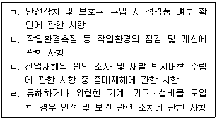
- ㄱ
- ㄱ, ㄴ
- ㄷ, ㄹ
- ㄴ, ㄷ, ㄹ
- ㄱ, ㄴ, ㄷ, ㄹ
(정답률: 10%)
5. 산업안전보건법령상 안전보건관리규정에 관한 설명으로 옳은 것은?
- 사업주는 안전보건관리규정을 작성해야 할 사유가 발생한 날부터 30일 이내에, 이를변경할 사유가 발생한 경우에는 15일 이내에 안전보건관리규정을 작성해야 한다.
- 사업주가 안전보건관리규정을 작성할 때에는 소방ㆍ가스ㆍ전기ㆍ교통 분야 등의다른 법령에서 정하는 안전관리에 관한 규정과 통합하여 작성해서는 안 된다.
- 안전보건관리규정이 단체협약에 반하는 경우 안전보건관리규정으로 정한 기준에 따른다.
- 산업안전보건위원회가 설치되어 있지 아니한 사업장의 경우에는 사업주가 안전보건관리규정을 작성하거나 변경할 때에 근로자대표의 동의를 받아야 한다.
- 안전보건관리규정에는 안전 및 보건에 관한 관리조직에 관한 사항은 포함되지 않는다.
(정답률: 60%)
6. 산업안전보건법령상 사업주의 의무 사항에 해당하는 것은?
- 산업 안전 및 보건 정책의 수립 및 집행
- 해당 사업장의 안전 및 보건에 관한 정보를 근로자에게 제공
- 산업재해에 관한 조사 및 통계의 유지ㆍ관리
- 산업 안전 및 보건 관련 단체 등에 대한 지원 및 지도ㆍ감독
- 산업 안전 및 보건에 관한 의식을 북돋우기 위한 홍보ㆍ교육 등 안전문화 확산 추진
(정답률: 30%)
7. 산업안전보건법령상 용어에 관한 설명으로 옳지 않은 것은?
- 건설공사발주자는 도급인에 해당한다.
- 근로자의 과반수로 조직된 노동조합이 없는 경우에는 근로자의 과반수를 대표하는 자를 근로자대표로 한다.
- 노무를 제공하는 사람이 업무에 관계되는 설비에 의하여 질병에 걸리는 것은 산업재해에 해당한다.
- 명칭에 관계없이 물건의 제조ㆍ건설ㆍ수리 또는 서비스의 제공, 그 밖의 업무를 타인에게 맡기는 계약은 도급이다.
- 산업재해 중 3개월 이상의 요양이 필요한 부상자가 동시에 2명 이상 발생한 재해는 중대재해에 해당한다.
(정답률: 40%)
8. 산업안전보건법령상 자율검사프로그램에 따른 안전검사를 할 수 있는 검사원의 자격을 갖추지 못한 사람은?
- 「국가기술자격법」에 따른 기계ㆍ전기ㆍ전자ㆍ화공 또는 산업안전 분야에서 기사 이상의 자격을 취득한 후 해당 분야의 실무경력이 4년인 사람
- 「국가기술자격법」에 따른 기계ㆍ전기ㆍ전자ㆍ화공 또는 산업안전 분야에서 산업기사 이상의 자격을 취득한 후 해당 분야의 실무경력이 6년인 사람
- 「초ㆍ중등교육법」에 따른 고등학교ㆍ고등기술학교에서 기계ㆍ전기 또는 전자ㆍ화공 관련 학과를 졸업한 후 해당 분야의 실무경력이 6년인 사람
- 「고등교육법」에 따른 학교 중 수업연한이 4년인 학교에서 기계ㆍ전기ㆍ전자ㆍ화공 또는 산업안전 분야의 관련 학과를 졸업한 후 해당 분야의 실무경력이 4년인 사람
- 「국가기술자격법」에 따른 기계ㆍ전기ㆍ전자ㆍ화공 또는 산업안전 분야에서 기능사 이상의 자격을 취득한 후 해당 분야의 실무경력이 8년인 사람
(정답률: 46%)
9. 산업안전보건법령상 안전보건관리책임자에 대한 신규교육 및 보수교육의교육시간이 옳게 연결된 것은? (단, 다른 면제조건이나 감면조건을 고려하지 않음)
- 신규교육 : 6시간 이상, 보수교육 : 6시간 이상
- 신규교육 : 10시간 이상, 보수교육 : 6시간 이상
- 신규교육 : 10시간 이상, 보수교육 : 10시간 이상
- 신규교육 : 24시간 이상, 보수교육 : 10시간 이상
- 신규교육 : 34시간 이상, 보수교육 : 24시간 이상
(정답률: 28%)
10. 산업안전보건법령상 안전인증대상기계등이 아닌 유해ㆍ위험기계등으로서 자율안전확인대상기계등에 해당하는 것이 아닌 것은?
- 휴대형이 아닌 연삭기(硏削機)
- 파쇄기 또는 분쇄기
- 용접용 보안면
- 자동차정비용 리프트
- 식품가공용 제면기
(정답률: 19%)
11. 산업안전보건법령상 물질안전보건자료의 작성ㆍ제출 제외 대상 화학물질 등에 해당하지 않는 것은?
- 「마약류 관리에 관한 법률」에 따른 마약 및 향정신성의약품
- 「사료관리법」에 따른 사료
- 「생활주변방사선 안전관리법」에 따른 원료물질
- 「약사법」에 따른 의약품 및 의약외품
- 「방위사업법」에 따른 군수품
(정답률: 19%)
12. 산업안전보건법령상 안전보건교육 교육대상별 교육내용 중 근로자 정기교육에 해당하지 않는 것은?
- 관리감독자의 역할과 임무에 관한 사항
- 산업보건 및 직업병 예방에 관한 사항
- 산업안전보건법령 및 산업재해보상보험 제도에 관한 사항
- 직무스트레스 예방 및 관리에 관한 사항
- 산업안전 및 사고 예방에 관한 사항
(정답률: 70%)
13. 산업안전보건법령상 유해하거나 위험한 기계ㆍ기구ㆍ설비로서 안전검사대상기계등에 해당하는 것은?
- 정격 하중 1톤인 크레인
- 이동식 국소 배기장치
- 밀폐형 구조의 롤러기
- 가정용 원심기
- 산업용 로봇
(정답률: 10%)
14. 산업안전보건법령상 도급인 및 그의 수급인 전원으로 구성된 안전 및 보건에 관한 협의체에서 협의해야 하는 사항이 아닌 것은?
- 작업의 시작 시간
- 작업의 종료 시간
- 작업 또는 작업장 간의 연락방법
- 재해발생 위험이 있는 경우 대피방법
- 사업주와 수급인 또는 수급인 상호 간의 연락 방법 및 작업공정의 조정
(정답률: 10%)
15. 산업안전보건법령상 유해성ㆍ위험성 조사 제외 화학물질에 해당하는 것을 모두 고른 것은?
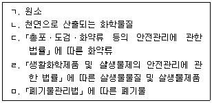
- ㄴ
- ㄱ, ㅁ
- ㄷ, ㄹ, ㅁ
- ㄱ, ㄴ, ㄷ, ㄹ
- ㄱ, ㄴ, ㄷ, ㄹ, ㅁ
(정답률: 0%)
16. 산업안전보건법령상 기계등 대여자의 유해ㆍ위험 방지 조치로서 타인에게 기계등을 대여하는 자가 해당 기계등을 대여받은 자에게 서면으로 발급해야 할 사항을 모두 고른 것은?
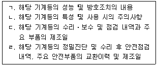
- ㄱ, ㄹ
- ㄴ, ㄷ
- ㄷ, ㄹ
- ㄱ, ㄴ, ㄷ
- ㄱ, ㄴ, ㄷ, ㄹ
(정답률: 40%)
17. 산업안전보건기준에 관한 규칙상 사업주가 작업장에 비상구가 아닌 출입구를 설치하는 경우 준수해야 하는 사항으로 옳지 않은 것은?
- 출입구의 위치, 수 및 크기가 작업장의 용도와 특성에 맞도록 할 것
- 출입구에 문을 설치하는 경우에는 근로자가 쉽게 열고 닫을 수 있도록 할 것
- 주된 목적이 하역운반기계용인 출입구에는 인접하여 보행자용 출입구를 따로 설치할 것
- 하역운반기계의 통로와 인접하여 있는 출입구에서 접촉에 의하여 근로자에게 위험을 미칠 우려가 있는 경우에는 비상등ㆍ비상벨 등 경보장치를 할 것
- 출입구에 문을 설치하지 아니한 경우로서 계단이 출입구와 바로 연결된 경우, 작업자의 안전한 통행을 위하여 그 사이에 1.5미터 이상 거리를 둘 것
(정답률: 37%)
18. 산업안전보건기준에 관한 규칙상 사업주가 사다리식 통로 등을 설치하는 경우 준수해야 하는 사항으로 옳지 않은 것은? (단, 잠함(潛函) 및 건조ㆍ수리중인 선박의 경우는 아님)
- 발판과 벽과의 사이는 15센티미터 이상의 간격을 유지할 것
- 폭은 30센티미터 이상으로 할 것
- 사다리식 통로의 길이가 10미터 이상인 경우에는 5미터 이내마다 계단참을 설치할 것
- 고정식 사다리식 통로의 기울기는 75도 이하로 하고 그 높이가 5미터 이상인 경우에는 바닥으로부터 높이가 2미터 되는 지점부터 등받이울을 설치할 것
- 사다리의 상단은 걸쳐놓은 지점으로부터 60센티미터 이상 올라가도록 할 것
(정답률: 10%)
19. 산업안전보건법령상 사업주가 보존해야 할 서류의 보존기간이 2년인 것은?
- 노사협의체의 회의록
- 안전보건관리책임자의 선임에 관한 서류
- 화학물질의 유해성ㆍ위험성 조사에 관한 서류
- 산업재해의 발생 원인 등 기록
- 작업환경측정에 관한 서류
(정답률: 50%)
20. 산업안전보건법령상 작업환경측정기관에 관한 지정 요건을 갖추면 작업환경측정기관으로 지정받을 수 있는 자를 모두 고른 것은?
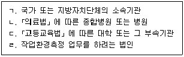
- ㄱ, ㄴ
- ㄷ, ㄹ
- ㄱ, ㄴ, ㄷ
- ㄴ, ㄷ, ㄹ
- ㄱ, ㄴ, ㄷ, ㄹ
(정답률: 20%)
21. 산업안전보건법령상 일반건강진단을 실시한 것으로 인정되는 건강진단에 해당하지 않는 것은?
- 「국민건강보험법」에 따른 건강검진
- 「선원법」에 따른 건강진단
- 「진폐의 예방과 진폐근로자의 보호 등에 관한 법률」에 따른 정기 건강진단
- 「병역법」에 따른 신체검사
- 「항공안전법」에 따른 신체검사
(정답률: 55%)
22. 산업안전보건법령상 사업주가 작성하여야 할 공정안전보고서에 포함되어야 할 내용으로 옳지 않은 것은?
- 공정안전자료
- 산업재해 예방에 관한 기본계획
- 안전운전계획
- 비상조치계획
- 공정위험성 평가서
(정답률: 28%)
23. 산업안전보건법령상 역학조사 및 자격 등에 의한 취업제한 등에 관한 설명으로 옳지 않은 것은?
- 사업주는 유해하거나 위험한 작업으로 상당한 지식이나 숙련도가 요구되는 고용노동부령으로 정하는 작업의 경우 그 작업에 필요한 자격ㆍ면허ㆍ경험 또는기능을 가진 근로자가 아닌 사람에게 그 작업을 하게 해서는 아니된다.
- 사업주 및 근로자는 고용노동부장관이 역학조사를 실시하는 경우 적극 협조하여야 하며, 정당한 사유없이 역학조사를 거부ㆍ방해하거나 기피해서는 아니 된다.
- 한국산업안전보건공단이 업무상 질병 여부의 결정을 위하여 역학조사를 요청하는 경우 근로복지공단은 역학조사를 실시하여야 한다.
- 고용노동부장관은 역학조사를 위하여 필요하면「산업안전보건법」에 따른 근로자의 건강진단결과,「국민건강보험법」에 따른 요양급여기록 및 건강검진 결과,「고용보험법」에 따른 고용정보,「암관리법」에 따른 질병정보 및 사망원인정보 등을 관련 기관에 요청할 수 있다.
- 유해하거나 위험한 작업으로 상당한 지식이나 숙련도가 요구되는 고용노동부령으로 정하는 작업의 경우 고용노동부장관은 자격ㆍ면허의 취득 또는 근로자의 기능 습득을 위하여 교육기관을 지정할 수 있다.
(정답률: 40%)
24. 산업안전보건법령상 산업안전지도사에 관한 설명으로 옳지 않은 것은?
- 산업안전지도사는 산업보건에 관한 조사ㆍ연구의 직무를 수행한다.
- 산업안전지도사는 유해ㆍ위험의 방지대책에 관한 평가ㆍ지도의 직무를 수행한다.
- 산업안전지도사의 업무 영역은 기계안전ㆍ전기안전ㆍ화공안전ㆍ건설안전 분야로 구분한다.
- 산업안전지도사가 직무를 수행하려는 경우에는 고용노동부령으로 정하는 바에 따라 고용노동부장관에게 등록하여야 한다.
- 「산업안전보건법」을 위반하여 벌금형을 선고받고 1년이 지나지 아니한 사람은 산업안전지도사 직무수행을 위해 고용노동부장관에게 등록을 할 수 없다.
(정답률: 64%)
25. 산업안전보건법령상 유해하거나 위험한 작업에 해당하여 근로조건의 개선을 통하여 근로자의 건강보호를 위한 조치를 하여야 하는 작업을 모두 고른 것은?
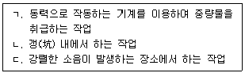
- ㄱ
- ㄴ
- ㄷ
- ㄱ, ㄷ
- ㄴ, ㄷ
(정답률: 46%)
2과목: 산업보건일반
26. 국내ㆍ외 산업위생의 역사에 관한 설명으로 옳지 않은 것은?
- 미국의 산업위생학자 Hamilton은 유해물질 노출과 질병과의 관계를 규명하였다.
- 1981년 우리나라는 노동청이 노동부로 승격되었고 산업안전보건법이 공포되었다.
- 원진레이온에서 이황화탄소(CS2) 중독이 집단적으로 발생하였다.
- Agricola는 음낭암의 원인물질이 검댕(soot)이라고 규명하였다.
- Ramazzini는 직업병의 원인을 작업장에서 사용하는 유해물질과 불안전한 작업자세나 과격한 동작으로 구분하였다.
(정답률: 10%)
27. 망간(Mn)의 인체에 대한 실험결과 안전한 체내 흡수량은 0.1mg/kg 이었다. 1일 작업시간이 8시간인 경우 허용농도(mg/m3)는 약 얼마인가? (단, 폐에 의한 흡수율은 1, 호흡률은 1.2m3/hr, 근로자의 체중은 80kg으로 계산한다.)
- 0.83
- 0.88
- 0.93
- 0.98
- 1.03
(정답률: 20%)
28. 작업환경측정 및 정도관리 등에 관한 고시에서 입자상 물질의 측정, 분석방법의 내용으로 옳지 않은 것은?
- 석면의 농도는 여과채취방법으로 측정하고 계수방법 또는 이와 동등이상의 분석방법으로 분석한다.
- 광물성분진은 여과채취방법으로 측정한다.
- 흡입성분진은 흡입성분진용 분립장치 또는 흡입성분진을 채취할 수 있는 기기를 이용한 여과채취방법으로 측정한다.
- 용접흄은 여과채취방법으로 측정하되 용접보안면을 착용한 경우에는 그 외부에서 시료를 채취한다.
- 규산염은 중량분석방법으로 분석한다.
(정답률: 40%)
29. 직경 20mm의 원형 덕트에서 측정한 후드정압(SPh)은 100mmH2O, 유입계수(Ce)는 0.5이었다. 후드의 필요 환기량(m3/min)은 약 얼마인가? (단, 현재의 공기는 표준공기 상태이다.)
- 18.10
- 23.10
- 28.10
- 33.10
- 38.10
(정답률: 0%)
30. 산업안전보건법 시행규칙과 산업안전보건기준에 관한 규칙상 소음발생으로 인한 건강장해 예방에 관한 설명으로 옳지 않은 것은?
- 8시간 시간가중평균 80dB 이상의 소음은 작업환경측정 대상이다.
- 1일 8시간 작업을 기준으로 소음측정 결과 85dB인 경우 청력보존 프로그램 수립대상이다.
- 1일 8시간 작업을 기준으로 소음측정 결과 90dB인 경우 특수건강진단 대상이다.
- 사업주는 근로자가 강렬한 소음작업에 종사하는 경우 인체에 미치는 영향과증상을 근로자에게 알려야 한다.
- 사업주는 근로자가 충격소음작업에 종사하는 경우 근로자에게 청력보호구를지급하고 착용하도록 하여야 한다.
(정답률: 40%)
31. 전리방사선에 관한 설명으로 옳은 것은?
- β입자는 그 자체가 전리적 성질을 가지고 있다.
- γ-선이 인체에 흡수되면 α입자가 생성되면서 전리작용을 일으킨다.
- 중성자는 하전되어 있어 1차적인 방사선을 생성한다.
- 렌트겐(R)은 방사능 단위에 해당된다.
- 라드(rad)는 조사선량 단위에 해당된다.
(정답률: 0%)
32. 입자상 물질의 호흡기 내 침착 및 인체 방어기전에 관한 설명으로 옳지 않은 것은?
- 입자상 물질이 호흡기 내에 침착하는 데는 충돌, 중력침강, 확산, 간섭 및 정전기 침강이 관여한다.
- 호흡성분진(RPM)은 주로 폐포에 침착되어 독성을 나타내며 평균입자의 크기(D50)는 10μm이다.
- 흡입된 공기는 기도를 거쳐 기관지와 미세기관지를 통하여 폐로 들어간다.
- 기도와 기관지에 침착된 먼지는 점액 섬모운동에 의해 상승하고 상기도로 이동되어 제거된다.
- 흡입성분진(IPM)은 주로 호흡기계의 상기도 부위에 독성을 나타낸다.
(정답률: 10%)
33. 산업안전보건법 시행규칙상 유해인자의 유해성ㆍ위험성 분류기준으로 옳은 것은?
- 급성 독성 물질: 호흡기를 통하여 2시간 동안 흡입하는 경우 유해한 영향을 일으키는 물질
- 소음: 소음성난청을 유발할 수 있는 80데시벨(A) 이상의 시끄러운 소리
- 이상기압: 게이지 압력이 제곱미터당 1킬로그램 초과 또는 미만인 기압
- 공기매개 감염인자: 결핵ㆍ수두ㆍ홍역 등 공기 또는 비말감염 등을 매개로 호흡기를 통하여 전염되는 인자
- 자연발화성 액체: 적은 양으로도 공기와 접촉하여 10분 안에 발화할 수 있는 액체
(정답률: 30%)
34. 근로자 건강진단 실시기준에서 인체에 미치는 영향이 “수면방해, 행동이상, 신경증상, 발음부정확 등”으로 기술된 유해요인은?
- 망간
- 오산화바나듐
- 수은
- 카드뮴
- 니켈
(정답률: 10%)
35. 산업안전보건기준에 관한 규칙상 사업주의 근골격계질환 유해요인조사에관한 내용으로 옳은 것은?
- 신설 사업장은 신설일부터 6개월 이내에 최초 유해요인조사를 하여야 한다.
- 근골격계부담작업 여부와 상관없이 3년마다 유해요인조사를 하여야 한다.
- 법에 따른 임시건강진단 등에서 근골격계질환자가 발생하였을 경우, 근골격계부담작업이 아닌 작업에서 발생한 경우라도 지체 없이 유해요인조사를 하여야 한다.
- 근골격계부담작업에 해당하는 새로운 작업ㆍ설비를 도입한 경우 반드시 고용노동부장관이 정하여 고시하는 방법에 따라 유해요인조사를 하여야 한다.
- 유해요인조사 결과 근골격계질환 발생 우려가 없더라도 인간공학적으로 설계된인력작업 보조설비 설치 등 반드시 작업환경 개선에 필요한 조치를 하여야 한다.
(정답률: 0%)
36. 작업환경 개선을 위한 공학적 관리 방안이 아닌 것은?
- 대체(Substitution)
- 호흡보호구(Respirator)
- 포위(Enclosure)
- 환기(Ventilation)
- 격리(Isolation)
(정답률: 28%)
37. 산업안전보건기준에 관한 규칙상 근로자 건강장해 예방을 위한 사업주의 조치에 관한 설명으로 옳지 않은 것은?
- 고열작업에 근로자를 새로 배치할 경우 고열에 순응할 때까지 고열작업시간을 매일 단계적으로 증가시키는 등 필요한 조치를 해야 한다.
- 근로자가 한랭작업을 하는 경우 적절한 지방과 비타민 섭취를 위한 영양지도를 해야 한다.
- 근로자 신체 등에 방사성물질이 부착될 우려가 있을 경우 판 또는 막 등의 방지설비를 제거해야 한다.
- 근로자가 주사 및 채혈 작업 시 채취한 혈액을 검사 용기에 옮기는 경우에는 주사침 사용을 금지하도록 해야 한다.
- 근로자가 공기매개 감염병이 있는 환자와 접촉하는 경우 면역이 저하되는 등 감염의 위험이 높은 근로자는 전염성이 있는 환자와의 접촉을 제한하도록 해야 한다.
(정답률: 10%)
38. 물질안전보건자료(MSDS) 작성 시 포함되어야 할 항목에 해당하는 것을 모두 고른 것은?
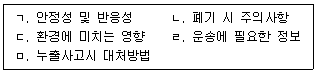
- ㄱ, ㄷ, ㄹ
- ㄱ, ㄷ, ㅁ
- ㄴ, ㄹ, ㅁ
- ㄱ, ㄴ, ㄷ, ㅁ
- ㄱ, ㄴ, ㄷ, ㄹ, ㅁ
(정답률: 28%)
39. 호흡보호구에 관한 설명으로 옳지 않은 것은?
- 대기에 대한 압력상태에 따라 음압식과 양압식 호흡보호구로 분류된다.
- 음압 밀착도 자가점검은 흡입구를 막고 숨을 들이마신다.
- 양압 밀착도 자가점검은 배출구를 막고 숨을 내쉰다.
- NIOSH는 발암물질에 대하여 음압식 호흡보호구를 사용하지 않도록 권고한다.
- 산소가 결핍된 밀폐공간 내에서는 방독마스크를 착용하여야 한다.
(정답률: 50%)
40. 인체 부위 중 피부에 관한 설명으로 옳지 않은 것은?
- 피부는 표피와 진피로 구분된다.
- 표피의 각질층은 전체 피부에 비하여 매우 두꺼워서 피부를 통한 화학물질의 흡수속도를 제한한다.
- 피부의 땀샘과 모낭은 피부에 노출된 화학물질을 직접 혈관으로 흡수할 수 있는 경로를 제공한다.
- 대부분의 화학물질이 피부를 투과하는 과정은 단순확산이다.
- 피부 수화도가 크면 클수록 투과도가 증대되어 흡수가 촉진된다.
(정답률: 0%)
41. 특수건강진단 대상 유해인자 중 치과검사를 치과의사가 실시해야 하는 것에 해당하지 않는 것은?
- 염소
- 과산화수소
- 고기압
- 이산화황
- 질산
(정답률: 10%)
42. 산업안전보건법 시행규칙상 유해인자별 제1차 검사항목의 생물학적 노출지표 및 시료 채취시기가 옳지 않은 것은?
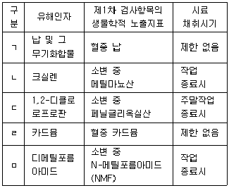
- ㄱ
- ㄴ
- ㄷ
- ㄹ
- ㅁ
(정답률: 19%)
43. 직무 스트레스의 반응에 따른 행동적 결과로 나타날 수 있는 것을 모두 고른 것은?
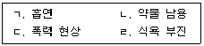
- ㄱ, ㄹ
- ㄴ, ㄷ
- ㄱ, ㄴ, ㄹ
- ㄴ, ㄷ, ㄹ
- ㄱ, ㄴ, ㄷ, ㄹ
(정답률: 50%)
44. 직장에서의 부적응 현상으로 보기 어려운 것은?
- 타협(Compromise)
- 퇴행(Degeneration)
- 고집(Fixation)
- 체념(Resignation)
- 구실(Pretext)
(정답률: 40%)
45. 건강진단 판정에서 건강관리구분과 그 의미의 연결이 옳은 것은?
- A - 질환 의심자로 2차 진단 필요
- C1 - 일반질병 유소견자로 사후관리가 필요
- D2 - 직업병 요관찰자로 추적관찰이 필요
- R - 건강진단 시기 부적정으로 1차 재검 필요
- U - 2차 건강진단 미실시로 건강관리구분을 판정할 수 없음
(정답률: 37%)
46. 산업재해의 4개 기본원인(4M) 중 Media(매체-작업)에 해당하지 않는 것은?
- 위험 방호장치의 불량
- 작업정보의 부적절
- 작업자세의 결함
- 작업환경조건의 불량
- 작업공간의 불량
(정답률: 20%)
47. 재해사고 원인 분석을 위한 버드(F. Bird)의 이론에 관한 설명으로 옳지 않은 것은?
- 하인리히(H. Heinrich)의 사고연쇄 이론을 새로운 도미노 이론으로 개선하였다.
- 새로운 도미노 이론의 시간적 계열은 제어의 부족 → 기본원인 → 직접원인 → 사고 → 상해(재해)이다.
- 불안전한 행동 등 직접원인만 제거하면 재해사고가 발생하지 않는다.
- 기본원인은 개인적 요인과 작업상의 요인으로 분류된다.
- 부적적할 프로그램은 '제어의 부족'의 예에 해당한다.
(정답률: 40%)
48. 재해 통계에 관한 설명으로 옳지 않은 것은?
- “재해율”은 근로자 100명당 발생한 재해자수를 의미한다.
- “연천인율”은 1년간 평균 1,000명당 발생한 재해자수를 의미한다.
- “도수율”은 연 근로시간 10,000시간당 발생한 재해건수를 의미한다.
- “강도율”은 연 근로시간 1,000시간당 재해로 인하여 근로를 하지 못하게 된 일수를 의미한다.
- “환산도수율”과 “환산강도율”은 연 근로시간을 10,000시간으로 하여 계산한것이다.
(정답률: 10%)
49. A사업장 소속 근로자 중 산업재해로 사망 1명, 3일의 휴업이 필요한 부상자 3명, 4일의 휴업이 필요한 부상자 4명이 발생하였다. 산업안전보건법 시행규칙에 따라 A사업장의 사업주가 산업재해 발생 보고를 하여야 하는 인원(명)은?
- 1
- 4
- 5
- 7
- 8
(정답률: 40%)
50. 역학 용어에 관한 설명으로 옳지 않은 것은?
- 위음성률(false negative rate)과 위양성률(false positive rate)은 타당도 지표이다.
- 기여위험도(attributable risk ratio)는 어떤 위험요인에 노출된 사람과 노출되지않은 사람 사이의 발병률 차이를 의미한다.
- 특이도(specificity)는 해당 질병이 없는 사람들을 검사한 결과가 음성으로 나타나는 확률이다.
- 유병률(prevalence rate)은 일정기간 동안 질병이 없던 인구에서 질병이 발생한율이다.
- 비교위험도(relative risk ratio)가 1보다 큰 경우는 해당 요인에 노출되면 질병의 위험도가 증가함을 의미한다.
(정답률: 20%)
3과목: 기업진단 · 지도
51. 조직구조 설계의 상황요인에 해당하는 것을 모두 고른 것은?
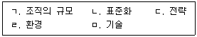
- ㄱ, ㄴ, ㄷ
- ㄱ, ㄴ, ㄹ
- ㄴ ,ㄷ, ㅁ
- ㄱ, ㄴ, ㄷ, ㄹ
- ㄱ, ㄷ, ㄹ, ㅁ
(정답률: 30%)
52. 프렌치(J. French)와 레이븐(B. Raven)의 권력의 원천에 관한 설명으로 옳지 않은 것은?
- 공식적 권력은 특정역할과 지위에 따른 계층구조에서 나온다.
- 공식적 권력은 해당지위에서 떠나면 유지되기 어렵다.
- 공식적 권력은 합법적 권력, 보상적 권력, 강압적 권력이 있다.
- 개인적 권력은 전문적 권력과 정보적 권력이 있다.
- 개인적 권력은 자신의 능력과 인격을 다른 사람으로부터 인정받아 생긴다.
(정답률: 19%)
53. 직무분석과 직무평가에 관한 설명으로 옳지 않은 것은?
- 직무분석은 인력확보와 인력개발을 위해 필요하다.
- 직무분석은 교육훈련 내용과 안전사고 예방에 관한 정보를 제공한다.
- 직무명세서는 직무수행자가 갖추어야 할 자격요건인 인적특성을 파악하기 위한 것이다.
- 직무평가 요소비교법은 평가대상 개별직무의 가치를 점수화하여 평가하는 기법이다.
- 직무평가는 조직의 목표달성에 더 많이 공헌하는 직무를 다른 직무에 비해 더 가치가 있다고 본다.
(정답률: 10%)
54. 협상에 관한 설명으로 옳지 않은 것은?
- 협상은 둘 이상의 당사자가 희소한 자원을 어떻게 분배할지 결정하는 과정이다.
- 협상에 관한 접근방법으로 분배적 교섭과 통합적 교섭이 있다.
- 분배적 교섭은 내가 이익을 보면 상대방은 손해를 보는 구조이다.
- 통합적 교섭은 윈-윈 해결책을 창출하는 타결점이 있다는 것을 전제로 한다.
- 분배적 교섭은 협상당사자가 전체자원(pie)이 유동적이라는 전제하에 협상을 진행한다.
(정답률: 10%)
55. 노동쟁의와 관련하여 성격이 다른 하나는?
- 파업
- 준법투쟁
- 불매운동
- 생산통제
- 대체고용
(정답률: 30%)
56. 대량고객화(mass customization)에 관한 설명으로 옳지 않은 것은?
- 높은 가격과 다양한 제품 및 서비스를 제공하는 개념이다.
- 대량고객화 달성 전략의 하나로 모듈화 설계와 생산이 사용된다.
- 대량고객화 관련 프로세스는 주로 주문조립생산과 관련이 있다.
- 정유, 가스 산업처럼 대량고객화를 적용하기 어렵고 효과 달성이 어려운 제품이나 산업이 존재한다.
- 주문접수 시 까지 제품 및 서비스를 연기(postpone)하는 활동은 대량고객화 기법중의 하나이다.
(정답률: 30%)
57. 품질경영에 관한 설명으로 옳지 않은 것은?
- 쥬란(J. Juran)은 품질삼각축(quality trilogy)으로 품질 계획, 관리, 개선을 주장했다.
- 데밍(W. Deming)은 최고경영진의 장기적 관점 품질관리와 종업원 교육훈련 등을 포함한 14가지 품질경영 철학을 주장했다.
- 종합적 품질경영(TQM)의 과제 해결 단계는 DICA(Define, Implement, Check, Act)이다.
- 종합적 품질경영(TQM)은 프로세스 향상을 위해 지속적 개선을 지향한다.
- 종합적 품질경영(TQM)은 외부 고객만족 뿐만 아니라 내부 고객만족을 위해 노력한다.
(정답률: 20%)
58. 6시그마와 린을 비교 설명한 것으로 옳은 것은?
- 6시그마는 낭비 제거나 감소에, 린은 결점 감소나 제거에 집중한다.
- 6시그마는 부가가치 활동 분석을 위해 모든 형태의 흐름도를, 린은 가치흐름도를 주로 사용한다.
- 6시그마는 임원급 챔피언의 역할이 없지만, 린은 임원급 챔피언의 역할이 중요하다.
- 6시그마는 개선활동에 파트타임(겸임) 리더가, 린은 풀타임(전담) 리더가 담당한다.
- 6시그마의 개선 과제는 전략적 관점에서 선정하지 않지만, 린은 전략적 관점에서 선정한다.
(정답률: 20%)
59. 생산운영관리의 최신 경향 중 기업의 사회적 책임과 환경경영에 관한 설명으로 옳은 것을 모두 고른 것은?
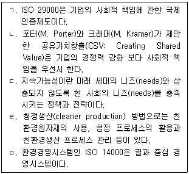
- ㄱ, ㄴ
- ㄷ, ㄹ
- ㄹ, ㅁ
- ㄷ, ㄹ, ㅁ
- ㄱ, ㄷ, ㄹ, ㅁ
(정답률: 10%)
60. 직무분석을 위해 사용되는 방법들 중 정보입력, 정신적 과정, 작업의 결과, 타인과의 관계, 직무맥락, 기타 직무특성 등의 범주로 조직화되어 있는 것은?
- 과업질문지(Task Inventory: TI)
- 기능적 직무분석(Functional Job Analysis: FJA)
- 직위분석질문지(Position Analysis Questionnaire: PAQ)
- 직무요소질문지(Job Components Inventory: JCI)
- 직무분석 시스템(Job Analysis System: JAS)
(정답률: 10%)
61. 직업 스트레스 모델 중 종단 설계를 사용하여 업무량과 이외의 다양한 직무요구가 종업원의 안녕과 동기에 미치는 영향을 살펴보기 위한 것은?
- 요구-통제 모델(Demands-Control model)
- 자원보존이론(Conservation of Resources theory)
- 사람-환경 적합 모델(Person-Environment Fit model)
- 직무 요구-자원 모델(Job Demands-Resources model)
- 노력-보상 불균형 모델(Effort-Reward Imbalance model)
(정답률: 28%)
62. 자기결정이론(self-determination theory)에서 내적동기에 영향을 미치는 세 가지 기본욕구를 모두 고른 것은?
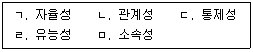
- ㄱ, ㄴ, ㄷ
- ㄱ, ㄴ, ㄹ
- ㄱ, ㄷ, ㅁ
- ㄴ, ㄷ, ㅁ
- ㄷ, ㄹ, ㅁ
(정답률: 19%)
63. 터크맨(B. Tuckman)이 제안한 팀 발달의 단계 모형에서 '개별적 사람의 집합'이 '의미 있는 팀'이 되는 단계는?
- 형성기(forming)
- 격동기(storming)
- 규범기(norming)
- 수행기(performing)
- 휴회기(adjourning)
(정답률: 0%)
64. 반생산적 업무행동(CWB) 중 직ㆍ간접적으로 조직 내에서 행해지는 일을 방해하려는 의도적 시도를 의미하며 다음과 같은 사례에 해당하는 것은?
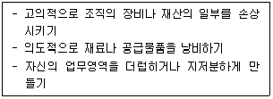
- 철회(withdrawal)
- 사보타주(sabotage)
- 직장무례(workplace incivility)
- 생산일탈(production deviance)
- 타인학대(abuse toward others)
(정답률: 10%)
65. 스웨인(A. Swain)과 커트맨(H. Cuttmann)이 구분한 인간오류(human error)의 유형에 관한 설명으로 옳지 않은 것은?
- 생략오류(omission error): 부분으로는 옳으나 전체로는 틀린 것을 옳다고 주장하는 오류
- 시간오류(timing error): 업무를 정해진 시간보다 너무 빠르게 혹은 늦게 수행했을 때 발생하는 오류
- 순서오류(sequence error): 업무의 순서를 잘못 이해했을 때 발생하는 오류
- 실행오류(commission error): 수행해야 할 업무를 부정확하게 수행하기 때문에 생겨나는 오류
- 부가오류(extraneous error): 불필요한 절차를 수행하는 경우에 생기는 오류
(정답률: 30%)
66. 아래 그림에서 (a)와 (c)가 일직선으로 보이지만 실제로는 (a)와 (b)가 일직선이다. 이러한 현상을 나타내는 용어는?
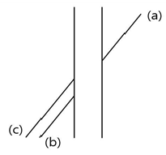
- 뮬러-라이어(Müller-Lyer) 착시현상
- 티체너(Titchener) 착시현상
- 폰조(Ponzo) 착시현상
- 포겐도르프(Poggendorf) 착시현상
- 죌너(Zöllner) 착시현상
(정답률: 10%)
67. 산업재해이론 중 하인리히(H. Heinrich)가 제시한 이론에 관한 설명으로 옳은 것은?
- 매트릭스 모델(Matrix model)을 제안하였으며, 작업자의 긴장수준이 사고를 유발한다고 보았다.
- 사고의 원인이 어떻게 연쇄반응을 일으키는지 도미노(domino)를 이용하여 설명하였다.
- 재해는 관리부족, 기본원인, 직접원인, 사고가 연쇄적으로 발생하면서 일어나는 것으로 보았다.
- 재해의 직접적인 원인은 불안전행동과 불안전상태를 유발하거나 방치한 전술적 오류에서 비롯된다고 보았다.
- 스위스 치즈 모델(Swiss cheese model)을 제시하였으며, 모든 요소의 불안전이 겹쳐져서 사고가 발생한다고 주장하였다.
(정답률: 30%)
68. 조직 스트레스원 자체의 수준을 감소시키기 위한 방법으로 옳은 것을 모두 고른 것은?
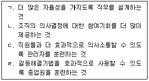
- ㄱ, ㄴ
- ㄷ, ㄹ
- ㄱ, ㄴ, ㄹ
- ㄴ, ㄷ, ㄹ
- ㄱ, ㄴ, ㄷ, ㄹ
(정답률: 30%)
69. TWI(Training Within Industry) 교육훈련내용이 아닌 것은?
- JIT(Job Instruction Training)
- JMT(Job Method Training)
- MTP(Management Training Program)
- JST(Job Safety Training)
- JRT(Job Relation Training)
(정답률: 10%)
70. 산업안전보건법령상 대여자 등이 안전조치 등을 해야 하는 기계ㆍ기구ㆍ설비 및 건축물 등에 해당하는 것을 모두 고른 것은?
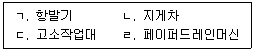
- ㄹ
- ㄱ, ㄴ
- ㄷ, ㄹ
- ㄱ, ㄴ, ㄷ
- ㄱ, ㄴ, ㄷ, ㄹ
(정답률: 0%)
71. 보호구 안전인증 고시에서 정하고 있는 추락 및 감전 위험방지용 안전모의 성능기준에 관한 내용 중 안전모의 시험성능기준 항목이 아닌 것은?
- 내마모성
- 내전압성
- 내수성
- 내관통성
- 난연성
(정답률: 10%)
72. 다음에서 설명하고 있는 위험성평가 기법은?
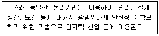
- ETA
- HAZOP
- CCA
- MORT
- THERP
(정답률: 10%)
73. 공기 중 연소(폭발)범위가 가장 넓은 것은?
- 아세틸렌
- 에탄
- 부탄
- 메탄
- 암모니아
(정답률: 19%)
74. 관리격자이론에서 “인간에 대한 관심은 대단히 높으나 생산에 대한 관심이 극히 낮은 리더십”의 유형은?
- (1.1)형
- (1.9)형
- (9.1)형
- (9.9)형
- (5.5)형
(정답률: 19%)
75. 산업안전보건기준에 관한 규칙의 일부이다. ( )에 들어갈 내용으로 옳은 것은?
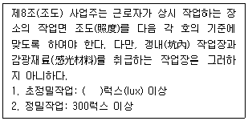
- 550
- 600
- 650
- 700
- 750
(정답률: 20%)